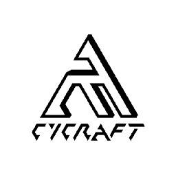
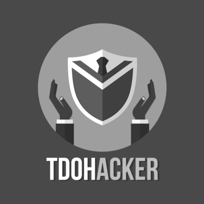

-
- Basic info
- Personal Information: Syue Siang Su / 28
- Education: MASTER OF COMPUTER SCIENCE / National Chiao Tung University
- ID: Boik
- GitHub: @qazbnm456
- Twitter: @boik_su
-
- Experience
CyCraft Technology Corp (Apr. 2020 - Present)
-
SENIOR SECURITY RESEARCHER
1. Do security research and publish new findings in conferences.
2. Track down campaigns and hackers behind through deep investigation and analyses.
3. Replicate new evasion techniques and propose corresponding detection rules to our R&D team to enhance our products and services.

Taiwan Semiconductor Manufacturing Company (Jan. 2019 - Mar. 2020)
-
INFORMATION TECHNOLOGY SECURITY, ENGINEER
1. Handle events and taking actions in the Cyber Incident Response Center.
2. Study advisories and design protection / detection rules on relevant products.
3. Conduct and Review security items after the evaluation of Read Team.
Taiwan Information Security Center (Sep. 2018 - Dec. 2018)
-
PROJECT ASSISTANT
1. Conduct penetration testing on corporations.
2. Study and develop penetrating tools.

The Declaration of Hacker (Jul. 2015 - Aug. 2018)
-
BACK-END WEB DEVELOPER, IT
1. Develop a wargame platform and introduce Docker as a primary DevOps solution.
2. Constructing a wargame platform built on top of Rails framework, and utilizing Docker to provide players environments with fast- starting and isolated features.
3. With Rancher's multi-tenant Container-as-a-service solution, Docker-War can really easy to setup, and bringing itself more accessible through Docker API.

Repository
-
- Skill.
Web Frontend
-
HTML / CSS
1. Can do some basic layouts and know how to tune it.
2. Familiar with Sass.
-
JavaScript
1. Know how to use Javascript original provided library.
2. Familiar with Vue.js.
3. Familiar with JQuery.
-
Others
1. Familiar with security of Web Application.
Cmdline Gadget
-
Node.js
1. Have been using Node.js for more than three years.
2. Familiar with developing environment on Linux and macOS.
3. I often use it for developing web apps or cmdline tools.
-
Rust
1. Start using it from 2022.
2. I had experience with golang before, and turned to Rust due to its philosophy.
3. I often use it to build tools that need intensive computation.
Others
-
1. I'm so passionate about programming and doing security-relevant things.
2. I love to work with teams, not work alone.
3. I have extensive knowledge of Web Security.
4. Pretty good at using Git and Markdown.